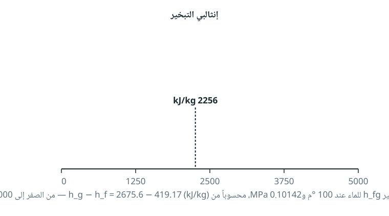

إنثالبي التبخير
Enthalpy of Vaporization
الفرق بين إنثالبي البخار المشبع وإنثالبي السائل المشبع عند درجة معلومة. مرادف نصّي للحرارة الكامنة للتبخير.
إنثالبي التبخير هو الفرق بين إنثالبي البخار المشبع وإنثالبي السائل المشبع عند درجة حرارة أو ضغط معلوم: h_fg = h_g − h_f. ينص Çengel أن هذا المقدار يسمى إنثالبي التبخير أو الحرارة الكامنة للتبخير، وأن المصطلحين مترادفان نصّاً في الكتاب. ويمثل المقدار الطاقة اللازمة لتبخير وحدة كتلة من السائل المشبع عند درجة أو ضغط معلوم، ويتناقص بارتفاع الحرارة أو الضغط ويصير صفراً عند النقطة الحرجة. ولأنه فرق إنثالبيين فهو خاصية حالة عند الظرف المحدد، لا يعتمد على مسار التبخير.
كيف تعمل الظاهرة؟
إنثالبي التبخير هو الفرق بين إنثالبي البخار المشبع وإنثالبي السائل المشبع عند درجة حرارة أو ضغط معلوم: h_fg = h_g − h_f. ينص Çengel أن هذا المقدار يسمى إنثالبي التبخير أو الحرارة الكامنة للتبخير، وأن المصطلحين مترادفان نصّاً في الكتاب. ويمثل الطاقة اللازمة لتبخير وحدة كتلة من السائل المشبع عند درجة أو ضغط معلوم.
العلاقة بالأرقام
h_fg = h_g − h_f، ووحدته kJ/kg. وفي جدول الماء المشبع عند 100 °م: h_f = 419.17 وh_g = 2675.6، فحاصل الفرق 2256.43 kJ/kg وهو إنثالبي التبخير عند هذا الظرف. ويتناقص بارتفاع الحرارة أو الضغط ويصير صفراً عند النقطة الحرجة. ولأنه فرق إنثالبيين فهو خاصية حالة عند الظرف المحدد، لا يعتمد على مسار التبخير.
مفاهيم متقاربة
إنثالبي التبخير يختلف عن الطاقة الداخلية للتبخير: الفرق بينهما P·Δv، وهو حد لا يُهمَل في البخار. ويختلف عن إنثالبي الانصهار: الأول يفصل السائل عن البخار والثاني يفصل الصلب عن السائل. ولا يُخلط بالحرارة الكامنة كتعريف عام، فالحرارة الكامنة تشمل الانصهار والتسامي أيضاً، وإنثالبي التبخير يخص التبخير وحده.
حدود التطبيق
المصطلحان مترادفان نصّاً في Çengel، لكن التمييز يبقى مفيداً لأن الحرارة الكامنة أعمّ من إنثالبي التبخير. والقيمة تنعدم عند النقطة الحرجة ولا تُستخدم بعدها. ولا يُستعمل إنثالبي التبخير لوصف التسامي أو الانصهار، فلكل تحول طوري إنثالبيته الخاصة.

| الكمية | القيمة | المصدر |
|---|---|---|
| إنثالبي التبخير h_fg للماء عند 100 °م و0.10142 MPa، محسوباً من h_g − h_f = 2675.6 − 419.17 | 2256.43 kJ/kg | [2] |
المصادر
- 1 Thermodynamics: An Engineering Approach, 8th ed. — McGraw-Hill (2015). openlibrary.org/api/books?bibkeys=ISBN:9780073398174&format=json&jscmd=data · اطُّلع عليه 2026-11-21
- 2 Thermodynamic Properties of Water for Temperatures from 0 to 1000 C and Pressures to 1000 MPa — NIST (NISTIR 5078) (1998). nvlpubs.nist.gov/nistpubs/Legacy/IR/nistir5078.pdf · اطُّلع عليه 2026-11-21
استشهد بهذا المصطلح
الصيغتان مبنيتان من بيانات الصفحة نفسها: العنوان والتاريخ ورابط النسخة المنشورة.
إنثالبي التبخير — Enthalpy of Vaporization. (2026). ديوان المعرفة — انفراد. https://infiradev.com/diwan/terms/term-enthalpy-of-vaporization.html
@misc{term-enthalpy-of-vaporization2026,
title = {إنثالبي التبخير},
titleaddon = {Enthalpy of Vaporization},
howpublished = {{ديوان المعرفة — انفراد} — مرجع علمي عربي},
year = {2026},
url = {https://infiradev.com/diwan/terms/term-enthalpy-of-vaporization.html},
urldate = {2026-11-26},
note = {مراجعة علمية: hermes (مراجعة معتمدة 2026-11-26)}
}
راجعه: hermes (مراجعة معتمدة 2026-11-26) · 2026-11-26 · آخر تحديث 2026-11-21